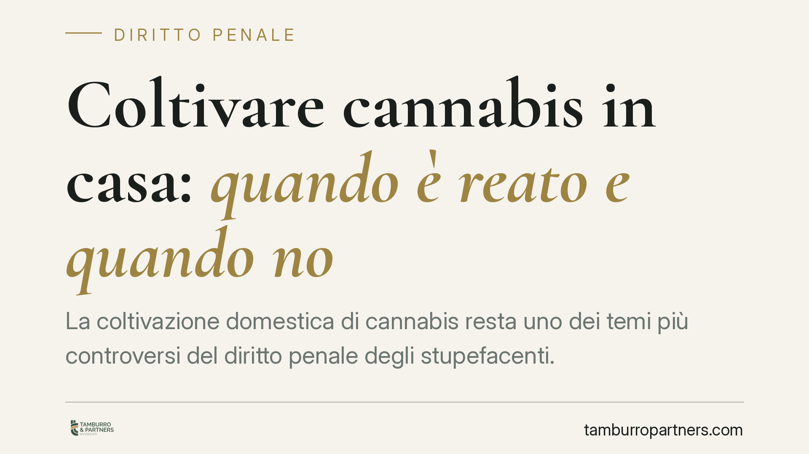

Coltivare cannabis in casa: quando è reato e quando no
La coltivazione domestica di cannabis resta uno dei temi più controversi del diritto penale degli stupefacenti. Tra la sanzione amministrativa per l'uso personale e il reato di spaccio corre una linea sottile, tracciata dalla giurisprudenza più che dal legislatore. Chi coltiva anche poche piante deve conoscere i criteri con cui giudici e forze dell'ordine valutano la rilevanza penale della condotta.

Il quadro normativo di riferimento
La disciplina degli stupefacenti è contenuta nel D.P.R. 309/1990, il cosiddetto Testo Unico. Due articoli reggono l'intera materia della cannabis coltivata in casa.
L'art. 73 punisce con la reclusione chiunque coltivi, produca o detenga sostanze stupefacenti al di fuori delle ipotesi consentite. È la norma che configura il reato, tradizionalmente ricondotto alla nozione di spaccio o comunque di destinazione a terzi.
L'art. 75 prevede invece sanzioni solo amministrative — sospensione della patente, del passaporto o del permesso di soggiorno — per chi detiene sostanze destinate all'uso esclusivamente personale. La competenza in questi casi è del Prefetto, non del giudice penale.
Il problema è che il Testo Unico non fissa una soglia quantitativa automatica. La distinzione tra rilevanza penale e mero illecito amministrativo è stata perciò costruita nel tempo dalla giurisprudenza.
Cosa dice la giurisprudenza
Le Sezioni Unite della Cassazione, con la nota sentenza del 2020, hanno chiarito un punto centrale: non ogni coltivazione integra reato. Restano fuori dall'area penale le coltivazioni domestiche di minime dimensioni, condotte con tecniche rudimentali e destinate all'autoconsumo, quando il prodotto è oggettivamente inidoneo a incrementare l'offerta sul mercato.
I giudici valutano un insieme di elementi concreti: il numero di piante, il grado di maturazione, la quantità di principio attivo ricavabile, le modalità di coltivazione, la presenza di strumenti tipici della cessione (bilancini, materiale per il confezionamento, dosi già suddivise).
Non esiste quindi un numero fisso di piante "legali". Due esemplari coltivati con impianti sofisticati e alta resa possono pesare più di cinque piante rachitiche su un balcone. Il criterio è funzionale: conta l'offensività reale della condotta rispetto al bene protetto, cioè la salute pubblica.
Anche la Corte Costituzionale è più volte intervenuta sulla proporzionalità delle pene, contribuendo a distinguere le condotte di lieve entità da quelle più gravi.
Cosa cambia in concreto
Per il cittadino la differenza è enorme. Nell'ipotesi amministrativa dell'art. 75 si rischiano sospensioni di documenti; nell'ipotesi penale dell'art. 73 si apre un procedimento con possibile reclusione, anche se nei casi di lieve entità le pene sono sensibilmente ridotte.
La qualificazione non dipende dalla volontà dichiarata dall'interessato, ma dagli elementi materiali che le forze dell'ordine rilevano al momento del controllo. Affermare "è solo per me" non basta: se il quadro complessivo suggerisce una potenziale destinazione a terzi, l'inquadramento vira sul penale.
È bene ricordare che la coltivazione, anche minima, non è mai pienamente lecita. Nella migliore delle ipotesi resta un illecito amministrativo. La formula "è legale coltivare in casa" è quindi imprecisa: la coltivazione domestica non è depenalizzata in senso pieno, è solo — a certe condizioni — sottratta all'area del reato.
Un ulteriore fattore di attenzione riguarda la cosiddetta cannabis light e i prodotti a basso THC: la loro liceità dipende da parametri normativi specifici e non estende alcuna copertura alla coltivazione di piante con principio attivo superiore alle soglie consentite.
Cosa fare in concreto
- Non sottovalutare l'illecito amministrativo. Anche l'uso personale espone a sospensione di patente e documenti: informarsi prima è sempre preferibile.
- Documentare la propria posizione con prudenza. In caso di controllo, limitarsi a fornire le generalità e chiedere l'assistenza di un difensore prima di rendere dichiarazioni.
- Evitare qualsiasi elemento che suggerisca cessione a terzi. Bilancini, dosi suddivise e materiale da confezionamento aggravano la valutazione.
- Consultare un legale in caso di sequestro o avviso di garanzia. La qualificazione giuridica della condotta si gioca sui dettagli tecnici e va affrontata subito.
- Non affidarsi a informazioni generiche reperite online. Le soglie e i criteri variano con l'evoluzione giurisprudenziale.
La materia è in continuo movimento: ogni caso va letto alla luce delle circostanze concrete e dell'orientamento più aggiornato della Cassazione.
---
Contributo informativo a cura di Tamburro & Partners - Avv. Giuseppe Tamburro. Non costituisce parere legale.
Ogni condominio ha una storia a sé.
Se gestisci un'amministrazione e vuoi un confronto su una specifica questione condominiale, scrivi allo studio. Ti rispondiamo entro un giorno lavorativo.